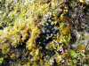
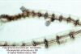

Prácticas de Biología Marina: algas
rojas
Fam. Rodomeláceas (Rhodomelaceae)
1.-
Características de la familia
- Talo filamentoso polisifonal, o formado por ramas
pseudoparenquimáticas
cilíndricas o aplanadas, rara vez laminares.
- Filamentos polisifonales desnudos o corticados, pero con la
estructura interna claramente visible, con segmentos formados por una
célula axial rodeada por una capa de células periaxiales
(4 a numerosas, según la especie):
- Con filamentos monoseriados laterales asimiladores
(pigmentados), ej.: Brongniartella
- Sin filamentos monoseriados, o con filamentos no pigmentados
(tricoblastos), ej.: Polysiphonia
- Filamentos polisifonales corticados con dos capas de
células periaxiales (la extructura interna se observa
sólo en las partes jóvenes), ej.: Bostrychia
- Talos pseudoparenquimáticos constituídos, en
sección transversal, por una médula de células
grandes (célula axial y varias capas de células
periaxiales) y una corteza de células pequeñas
- Ciclo biológico de tipo Polysiphonia,
trigenético, con gametofito (dióico) y tetrasporofito
morfológicamente iguales.
- Tetrasporangios tetraédricos, formados en los ejes
principales, por debajo de las células periaxiales
- Cistocarpos delimitados claramente por un pericarpo de
células gametofíticas
2.- Cuadro resumen con las especies más
comunes
Géneros
|
Especies y
características de los talos
|
Halopithys
|
H. incurvus
Talo
pseudoparenquimático con ramas
cilíndricas curvadas en la punta, dispuestas sobre dos
filas hacia el mismo lado de los ejes
|

|
|
Herposiphonia
|
H. secunda
Filamentos polisifonales
con ejes principales rastreros
|

|
|
Laurencia
|
|
Talos
pseudoparenquimáticos con puntas
obtusas o truncadas
Varias especies, ejemplo: L. pinnatifida,
pinnada y con ramas aplanadas
|

|
|
Polysiphonia
|
Numerosas especies de
difícil determinación
Filamentos polisifonales no
corticados o con corteza poco visible, sin ramitas uniseriadas
|

Gametofito masculino con ramas espermatangiales
|

Gametofito femenino con cistocarpos inmaduros
|

Tetrasporofito con tetrasporas
|
|
3.- Más datos sobre las Rodomeléceas del
litoral
atlántico andaluz
(actualizados de C. Romero Zarco, Introducción
al estudio del macrofitobentos marino de Andalucía occidental,
Universidad de Sevilla, guia de prácticas inédita)
A) Esquema
taxonómico de los
géneros tratados en esta página
| Tribus |
Géneros
|
Subfamilia Bostrychioideae
|
Bostrychieae
|
Bostrychia
|
Subfamilia Rhodomeloideae
|
| Amansieae
|
Aphanocladia (?)
Halopithys |
Osmundaria
Rytiphloea |
|
Brongniartelleae
|
Brongniartella
|
Chondrieae
|
Alsidium
(?)
Chondria
|
Herposiphonieae
|
Ctenosiphonia
(?)
Dipterosiphonia (?)
Herposiphonia |
Lophosiphonia
Ophiocladus (?) |
|
Laurencieae
|
Laurencia
|
Polysiphonieae
|
Boergeseniella
Polysiphonia
|
Pterosiphonieae
|
Pterosiphonia
|
(?) Posición taxonómica incierta
|
B) Clave artificial de
los géneros de
Rodomeláceas citados en el Atlántico andaluz
| 1. |
Talo con expansiones laminares a
ambos lados del eje (nervio medio), enrollado helicoidalmente
|
Osmundaria
|
1.
|
Talo filamentoso o
pseudoparenquimático, a veces aplanado, pero nunca laminar
|
2
|
2.
|
Talo
de organización pseudoparenquimática, con la
célula axial rodeada por una médula formada por varias
capas de células menores que resultan de la división de
las células periaxiales
|
3
|
2.
|
Talo
de organización filamentosa, a veces de aspecto
pseudoparenquimático en la zona basal, con segmentos en los que
se aprecian claramente las células periaxiales por debajo de la
corteza (si existe)
|
9
|
3.
|
Ápices obtusos o truncados
|
4
|
3.
|
Ápices agudos
|
5
|
4.
|
Ramas
cilíndricas o aplanadas, las de último orden muy cortas;
células pericentrales no diferenciadas del resto de la
médula en sección transversal
|
Laurencia
|
4.
|
Ramas
ciíndricas, las de último orden más o menos
alargadas; 5 células pericentrales claramente diferenciadas del
resto de la médula en sección transversal
|
Chondria p.p.
|
5.
|
Ápices rectos, de
simetría radial |
6
|
5.
|
Ápices curvados en forma
de gancho, de simetría dorsi-ventral |
7
|
6.
|
Ramitas
divaricadas (formando ángulos muy abiertos) y espiniformes
|
Alsidium
|
6.
|
Ramitas
no divaricadas ni espiniformes
|
Chondria p.p.
|
7.
|
Ramas aplanadas |
Rytiphloea |
7.
|
Ramas cilíndricas |
8
|
8.
|
Talo
de alrededor de 6 cm, con ramitas alternas |
Bostrychia
(véase también Aphanocladia)
|
8.
|
Talo
generalmente de mayor tamaño, con ramitas formando parejas en
forma de V |
|
9.
|
Con filamentos uniseriados
pigmentados recubriendo los ejes polisifonales
|
10
|
9.
|
Sin filamentos uniseriados o con
filamentos hialinos, no pigmantados (tricoblastos)
|
11
|
10.
|
Sin
células corticales; tetrasporangios en ramitas normales
|
Brongniartella
|
10.
|
Con
células corticales en los ejes maduros; tetrasporangios en
ramitas especiales
|
Véase
Dasya
|
11.
|
Ejes principales del talo erectos
|
12
|
11.
|
Ejes principales del talo
rastreros
|
16
|
12.
|
Ramificación
radial, frondes de tres dimensiones
|
Polysiphonia p.p.
|
12.
|
Ramificación
díistica, frondes (y a veces también los ejes) aplanados
|
13
|
13.
|
Ejes con corteza de
células pequeñas
|
14
|
13.
|
Ejes desprovistos de corteza
|
15
|
14.
|
Con
5 células periaxiales
|
Pterosiphonia p.p.
|
14.
|
Con
8-12 células periaxiales
|
Boergeseniella
|
15.
|
Ramitas laterales más o
menos coalescentes con el eje, de forma que cada segmento está
en contacto con alguna ramita |
Pterosiphonia p.p.
|
15.
|
Ramitas laterales no
coalescentes con el eje, situadas cada 4 segmentos o más |
Polysiphonia p.p.
|
16.
|
Todos
los ejes rastreros, sin ramas erectas
|
Ctenosiphonia
|
| 16 |
Con
ejes erectos simples o ramificados
|
17
|
17.
|
Con dos tipos de ramas que se
alternan a lo largo del eje, unas simples y otras pinnadas |
Dipterosiphonia
|
17.
|
Todas las ramas semejantes
|
18
|
18.
|
Ejes
con 4 células periaxiales
|
Polysiphonia p.p.
|
18.
|
Ejes
con 8 o más células pericentrales
|
19
|
19.
|
Ejes rastreros con la punta
enrrollada hacia la cara ventral (abajo)
|
Ophiocladus
|
19.
|
Ejes rastreros con la punta
curvada hacia la cara dorsal o casi recta
|
20
|
20.
|
Ramas
erectas ramificadas o no, con tricoblastos agrupados formando un cresta
en el extremo
|
Lophosiphonia
|
20.
|
Ramas
erectas simples, con tricoblastos repartidos o caducos
|
Herposiphonia
|
C) Catálogo
alfabética de los géneros y especies citadas en el
Atlántico andaluz hasta 1996
Alsidium
C. Agardh, 1827. Dos especies mediterráneas citadas en la
Península. Género muy parecido a Chondria, ejes cilíndricos y
ramitas divaricadas espiniformes.
A. helminthochorton
(La Tour.) Kütz., 1843. Especie citada de Cádiz por
Colmeiro en
1889, según Conde & al. (1996). Especie
termófila meditterránea.
Aphanocladia
Falkenb.,
1897. Una sola especie citada en ambas costas de la Península.
Género parecido a Rytiphloea.
A.
stichiosa (Funk) Ardré, 1970. Muy rara en Cádiz,
en Punta Carnero (Algeciras), citada por Flores-Moya & al. (1994).
Boergeseniella Kylin,
1956. Género muy parecido a Polysiphonia,
con filamentos fuertemente corticados que se ramifican en un
sólo plano. Es difícil precisar el número de
especies citadas en la Península, ya que las especies
mediterráneas de Polysiphonia
no han sido estudiadas en profundidad.
B.
fruticulosa (Wulfen) Kylin, 1956 [= Polysiphonia fruticulosa
(Wulfen) Spreng.]. Muy frecuente en Cádiz.
Mesolitoral, mezclada con Corallina. Fotófila
infralitoral de zonas batidas. Atlántica boreal.
B. thuyoides (Harvey)
Kylin, 1956 [= Polysiphonia
thuyoides Harvey;
Pterosiphonia thuyoides
(Harvey) F. Schmitz ]. Rara y escasa en Cádiz, recolectada en
noviembre en La Caleta y Barbate (Seoane-Camba, 1965). Atlántica
boreal.
Bostrychia
Mont.,
1842. Rodomeláceas. Sólo una especie citada en nuestro
litoral. Talo polisifonal, pero con dos anillos de 6 células
periaxiales por cada segmento, corticado. Ramificación de tipo
lateral, con puntas curvadas en forma de gancho.
B. scorpioides
((Huds.) Mont., 1842. Rara, Bahía de Cádiz y
desembocadura del caño Sancti Petri (Seoane-Camba, 1965).
También citada en Huelva, de Ayamonte (Navarro & Gallardo,
1994). Suele estar enredada en la base de plantas de marisma.
Mesolitoral. Atlántica.
Brongniartella
Bory,
1822. Una sola especie citada en la Península, tanto en el
Atlántico como en el Mediterráneo. Se diferencia de otras
rodomelácas filamentosas por sus ramitas asimiladoras
uniseriadas.
B. byssoides
(Goodenough & Woodward) Schmitz, 1893 [= Polysiphonia byssoides (Goodenough
& Woodward) Greville]. Rara en Cádiz, provincia de donde fue
citada en 1886 por González-Fragoso, según Conde &
al. (1996). Filamentos no corticados. Tiene frondes erectos
constituídos por un eje principal 2-3 veces ramificado
lateralmente, con ramificaciones en espiral, que a su vez están
densamente recubiertas por filamentos uniseriados pigmentados.
Chondria C.
Agardh, 1817. Rodomeláceas. Se citan seis especies en nuestras
costas (1 atlántica, 2 mediterráneas y 3 en ambos mares).
Talo pseudoparenquimático en arbolillo, con ejes
cilíndricos de 0,5-1,5 mm de diámetro;
ramificación lateral o irregular. Ramas laterales fusiformes o
claviformes, atenuadas en la base. Difiere de Laurencia por su anillo de
células pericentrales cláramente diferenciadas en
sección transversal.
| 1. |
Ápices terminados en
punta; alga cespitosa, formando almohadillas que rara vez superan los 3
cm de
altura |
C.
capillaris |
1.
|
Ápices obtusos,
terminados en una pequeña depresión; alga cespitosa
o no, que supera los 3 cm de
altura |
2
|
2.
|
Talo
iridiscente bajo el agua; ejes principales de 0,5 mm de diámetro
aproximádamente, poco ramificados
|
C.
caerulescens
|
2.
|
Talo
no iridiscente; ejes principales de 1 mm de diámetro
aproximadamente, muy ramificados
|
C. dasyphylla |
C. caerulescens
(J. Agardh) Falkenb., 1901. Frecuente en Cádiz durante casi todo
el año en comunidades cespitosas mesolitorales (Seoane-Camba,
1965). También citada en Ayamonte (Huelva) por Navarro &
Gallardo (1994). Bajo el agua ofrece una bella iridiscencia, sin
ambargo al secarse, el alga ennegrece. Atlántica boreal.
C. capillaris (Huds.) Wynne, 1991 [= C. tenuissima (Good. & Wood.)
C. Agardh]. Frecuenteen Cádiz (Seoane-Camba, 1965).
Infralitoral. Fotófila infralitoral de zonas calmas. Holo
indo-atlántica.
C. dasyphylla
(Woodward) C. Agardh, 1822. Citada en Cádiz por Agardh en 1822,
según Conde & al. (1996).
Ctenosiphonia
Falkenb.
in Engler & Prantl, 1897. Rodomeláceas. Una especie en la
P.I. Talo polisifonal de simetría dorsi-ventral, completamente
rastrero, sin ejes erectos.
C. hypnoides
(Welwitsch ex J. Agardh) Falkenb., 1901. Frecuente en Cádiz en
invierno y verano en comunidades cespitosas del mesolitoral medio e
inferior (Seoane-Camba, 1965). Atlántica.
Dipterosiphonia
F.
Schmitz & Falkenb., 1897. Rodomeláceas. Dos especies en la
P.I. (una de ellas sólo en el Atlántico). Talo
polisifonal de simetría dorsi-ventral, con ejes principales
rastreros y ramas laterales erectas de dos tipos alternantes, unas
simples y otras pinnadas.
| 1. |
Ramitas laterales aplanadas
|
D. dendritica |
1.
|
Ramitas todas cilíndricas
|
D. rigens |
D. dendritica
(C. Agardh) F. Schitz in Engler & Prantl, 1824. Muy rara en
Cádiz, observada en Barbate en Agosto sobre Phyllophora (Seoane-Camba, 1965).
Atlántica.
D. rigens (Schousboe)
Falkenberg, 1901. Especie citada en Cádiz por Feldmann en 1942
(según Conde &
al. 1996), pero aún no disponemos de información
taxonómica para diferenciar las dos especies
Halopithys
Kütz.,
1843. Rodomelácea. Una sola especie atlántica y
mediterránea en la P.I. Talo pseudoparenquimático con
ramas cilíndricas; ramificación lateral subpectinada (dos
filas de ramas formando un ángulo agudo entre sí); puntas
recurvadas.
H. incurvus
(Huds.) Batters, 1902. Alga robusta y rígida de color rojo muy
oscuro, que soporta gran cantidad de epífitos. Muy frecuente y
localmente abundante en Cádiz (Seoane-Camba, 1965).
Infralitoral. Fotófila infralitoral termófila.
Atlántica boreo-tropical.
Herposiphonia
Näg.,
1846. Rodomeláceas. Una especie citada en ambas orillas de la
Península. Talo polisifonal rastrero, con ramas erectas simples
que nacen de cada segmento del eje, curvadas hacia el ápice
formando una fila.
H. secunda
(C.
Agardh) Ambronn, 1880. (incl. H.
tenella C. Agardh). Frecuente en Cádiz (Seoane-Camba,
1965), rastrera, epífita o sobre rocas. También citada en
Isla Cristina (Huelva) por Navarro & Gallardo (1994).
Fotófila infralitoral de zonas calmas. Pantropical.
*Laurencia
Lamour.,
1813. Rodomeláceas. Siete especies conocidas en nuestras costas
(1 atlántica, 4 mediterráneas y 2 en ambos mares), aunque
el género requiere una revisión taxonómica, dada
su complejidad en otros mares. Difiere de Chondria porque en sección
transversal no se aprecian bien las células pericentrales, sino
sólo una médula homogénea de células
grandes.
Actualmente el género ha sido dividido en
tres: Laurencia,
ej. L. obtusa, Chondrophycus
(véase Garbary and Harper, en Cryptogamie: Algologie
19: 185–200, 1998), ej. C. papillosus, y Osmundea (véase
Nam et al., en Phycologia
33: 384–395, 1994), ej. O.
pinnatifida y O. hybrida.
| 1. |
Talo netamente aplanado |
L.
pinnatifida |
1.
|
Talo cilíndrico o
ligeramente comprimido |
2
|
2.
|
Últimas
ramificaciones muy cortas, en forma de verrugas
|
3
|
2.
|
Últimas
ramificaciones no en forma de verrugas
|
4
|
3.
|
Protuberancias verrucosas muy
abundantes por todo el talo
|
L. papillosa |
3.
|
Protuberancias verrucosas poco
abundantes, no distribuídas por todo el talo
|
L. paniculata |
4.
|
Disco
basal con ramificaciones estoloníferas. Talo de hasta 5 cm de
altura |
L.
hybrida |
4.
|
Disco
basal sin ramificaciones estoloníferas. Talo de hasta 12 cm de
altura |
L.
obtusa |
L.
hybrida (DC.) Lenorm. ex Duby, 1830 (= L. caespitosa Lamour., 1813).
Frecuente en invierno y primavera formando césped o
epífita en el mesolitoral medio, desde Cádiz hasta Tarifa
(Seoane-Camba, 1965). Atlántica en la P.I. Sin datos de
distribución.
L. obtusa
(Huds.) Lamour., 1813. Frecuente por toda la costa gaditana, encontrada
arrojada (Seoane-Camba, 1965). Fotófila infralitoral.
Cosmopolita.
L. paniculata
(C. Agardh) J. Agardh, 1863. Citada en Cádiz por Toni &
Forti en 1914 (según Conde & al., 1996).
L. papillosa
(Forsskal) Grev., 1830. Citada en Cádiz por Clemente en 1807
(según Conde & al., 1996). Pantropical.
*L. pinnatifida (Huds.)
Lamour., 1913. Muy frecuente en Cádiz desde otoño hasta primavera
en grietas y zonas protegidas del mesolitoral inferior (Seoane-Camba, 1965).
Fotófila infralitoral de zonas batidas. Subcosmopolita. Es posible que
parte de las algas de Cádiz citadas con este nombre, pertenezcan en realidad
a otra especie, L. osmunda
(S.G. Gmelin) Maggs & Hommersand, 1993, caracterizada por su zona de fijación
en forma de disco, no estolonífera. Sin embargo aún no ha sido
citada en Andalucía que sepamos.
*Lophosiphonia Falkenb.
in Engler & Prantl, 1897. Rodomeláceas. Probablemente sean
cuatro las especies ibéricas (una de ellas exclusiva del
Mediterráneo). Género muy parecido a Herposiphonia, se diferencia por
sus ramas laterales frecuentemente ramificadas y por la posición
apical de los tricoblastos (filamentos no pigmentados). No disponemos
de información sobre este género para poder difereniar
las dos especies citadas en el Atlántico andaluz.
L. reptabunda
(Suhr) Kylin, 1956. Frecuente en Cádiz (Seoane-Camba, 1965).
Observada principalmente en invierno como especie rastrera mesolitoral.
Borde mesolitoral inferior. Sin datos de distribución.
Atántico y Pacífico
L.
subadunca (Kütz.) Falkenberg, 1910. Rara en Huelva, citada
en Ayamonte sobre coralináceas incrustantes por Navarro &
Gallardo (1994).
Ophidocladus Falkenberg,
1897. Una sola especie en ambas orillas de la Península.
Género similar a Lophosiphonia,
pero con los ápices de los ejes rastreros enrollados hacia la
cara ventral, es decir, hacia abajo.
O.
simpliciusculus (Crouan frat.) Falkenberg, 1901 (= Polysiphonia simpliciuscula Crouan
frat.). Citado en la provincia de Cádiz por Bornet en 1892,
según Conde & al. (1996).
Osmundaria Lamour., (= Vidalia Lamour.). Una
especie atlántica y
mediterránea. Es un género atípico dentro de la
familia, por su talo laminar y retorcido helicoidalmente.
O. volubilis
(L.) Norris [= Vidalia volubilis
(L.) J. Agardh]. Poco frecuente en Cádiz, arrojada
(Seoane-Camba, 1965). Antisciófila. Atlántica tropical.
*Polysiphonia
Grev., 1823. Este género marca el
récord de especies citadas en la P.I., con 45 nombres
específicos (16 citadas del Atlántico, 19 del
Mediterráneo y
10 de ambos mares), si bien el número real de especies es
dudoso,
pues se requiere revisión taxonómica (Gallardo & al.
1985). En el Atlántico andaluz se
han citado 17 especies. Por el momento carecemos de datos suficientes
para construir una clave dicotómica.
Diversidad morfológica de
las
especies de Polysiphonia
|
Presencia de corteza
(formada por filamentos
rizodiales)
sobre y entre las
células periaxiales |
Nº de células pericentrales en los ejes erectos
|
4
|
5-8
|
9
ó más
|
Filamentos no corticados
|
P. atlantica (1)
P.
scopulorum (1)
P.
sertularioides (2) |
|
P.
lanosa (3)
P.
simulans (2) |
Corticados al menos en la base
|
P.
elongata (3)
P.
fibrillosa (4)
P.
flexella (3)
P.
flocculosa (3) |
P.
brodiaei (2)
P.
denudata (3) |
P.
fucoides (4) |
| (1) |
Talos con ejes principales
rastreros y ejes erectos subdicotómicos |
| (2) |
Talos con ejes principales
erectos (fijación discoidal opor ejes cortos y ramificados) y
con abundantes ramificaciones laterales |
| (3) |
Ídem, con ejes
erectos subdicotómicos |
| (4) |
Ídem, con
ramificación del talo irregular o variable dentro de la especie |
|
Otras especies sin
datos morfológicos: P.
dichotoma, P.
erythraea, P.
hirta, P.
obscura, P.
polyspora,
|
P. atlantica Kapraun & Norris, 1982 (= P. macrocarpa Harvey). Rara en
Huelva, sobre Codium y Dictyota en Ayamonte (Navarro
& Gallardo, 1994). Rastrera; filamentos con 4 células
periaxiales y sin corticación; ejes erectos muy ramificados;
abundantes rizoides en los ejes rastreros, no separados de las
células periaxiales por tabiques celulares. Especie parecida a Lophosiphonia reptabunda, de la que
se diferencia bien por el número menor de células
pericentrales. Indo-atlántica.
P.
brodiaei (Dillwyn) Sprengel, 1827 (= Hutchinsia bordiaei C. Agardh).
Citada en la provincia de Cádiz por Agardh en 1828 (según
Conde & al., 1996). Ejes erectos con 6-8 células
periaxiales, corticados al menos en la base, ramificados lateralmente.
Boreo-atlántica, introducida en el Pacífico.
P.
denudata (Dillwyn) Grev. ex Harvey, 1833. Rara en Huelva, sobre Coladostephus y Taonia en Ayamonte (Navarro &
Gallardo, 1994). Ejes erectos con 5-7 células periaxiales,
corticados al menos en la base, ramificados dicotómicamente.
Atlanto-pacífica.
P.
dichotoma Kütz., 1842. Rara en Cádiz, citada en la
Isla de las Palomas (Tarifa) por Conde & al. (1996b). Especie
mediterránea de la que no tenemos datos sobre su
morfología y distribución mundial.
P.
elongata (Hudson) Sprengel, 1827.(= Hutchinsia elongata C. Agardh).
Citada en la provincia de Cádiz por Agardh en 1824 (según
Conde & al., 1996). Ejes erectos con 4 células periaxiales,
corticados al menos en la base, corteza continua formada por
células grandes (dos por cada segmento) y pequeñas
(éstas más externas); ramificaciones reemplazando a los
tricoblastos, estrechadas en la base. Boreo-atlántica oriental.
P.
erythraea (Schousboe) J. Agardh, (¿año?). Citada
en Cádiz por Bornet en 1842 (según Conde & al.,
1996). No tenemos datos sobre la morfología y la
distribución de esta especie.
P.
fibrillosa (Dillwyn) Sprengel, 1827. (= P. spinulosa Grev.). Citada en la
provincia de Cádiz por González-Fragoso en 1823,
según Conde & al. (1996). Ejes erectos con 4 células
periaxiales (a veces aparentemente 5 debido a la corteza), corticados
al menos en la base, ramas en posición axilar con respecto a los
tricoblastos,
que son persistentes. Según Maggs & Hommersand (1993) esta
especie sólo llega hasta Francia por el Sur. Atlántica.
P.
flexella (C. Agardh) J. Agardh, 1842 (= Hutchinsia flexella C. Agardh).
Citada en la provincia de Cádiz por Agardh en 1828 (según
Conde & al., 1996). Según Carrillo & Sansón
(1989), esta especie es semejante a P.
elongata, pero con corticación discontinua formada por
células de igual tamaño. Especie mediterránea de
afinidad cálida, presente en las Islas Canarias.
P.
flocculosa (C. Agardh) Kütz., 1849 (= Hutchinsia subcontinua C. Agardh).
Citada en la provincia de Cádiz por Agardh en 1828 (según
Conde & al., 1996). Según Carrillo & Sansón
(1989), esta especie es semejante a P.
elongata, pero con 3-4 células corticales más
grandes que el resto en cada segmento. Especie mediterránea de
afinidad cálida, presente en las Islas Canarias.
P.
fucoides (Hudson) Grev., 1824. [= P. nigrescens (Hudson) Grev.; P. violacea (Roth) Sprengel; Hutchinsia nigrescens C. Agardh].
Citada en la provincia de Cádiz por Agardh en 1828 (según
Conde & al., 1996). Ejes erectos de 0,5-0,7 mm de diámetro,
con más de 10 células pericentrales, corticados en la
base. Se parece mucho a Boergeseniella
thuyoides por la forma de ramificarse, formando frondes
aplanados, pero se distingue de ella por tener corteza sólo en
los ejes principales y no por casi todo el talo.
Atlanto-pacífica templado-fría.
P.
hirta J. Agardh, (¿año?) (= Hutchinsia flocculosa var. fibrillosa C. Agardh). Citada en la
provincia de Cádiz por Agardh en 1824 (según Conde &
al., 1996). No tenemos datos morfológicos ni de
distribución de esta especie.
P.
lanosa (L.) Tandy, 1931. Citada en la provincia de
Cádiz por González-Fragoso en 1886, según
Conde & al. (1996). Rara en Huelva, sobre Fucus vesiculosus arrojado en El Rompido (Navarro
& Gallardo, 1994). Ejes erectos con 12-24 células
periaxiales, sin corteza, ramificados aparentemente de forma
dicotómica y divaricada, y de menos de 0,5 mm de
diámetro; generalmente epífita de fucales.
Atlántica en la península. Boreo-atlántica.
P.
obscura C. Agradh, J. Agardh, (¿año?) (= Hutchinsia obscura C. Agardh).
Citada en la provincia de Cádiz por Agardh en 1828, única
cita andaluza según Conde & al., 1996). No tenemos datos
sobre la morfología y la distribución de esta especie.
P.
polyspora (C. Agardh) J. Agardh, 1842. Citada en la provincia de
Cádiz por Agardh en 1824 (según Conde & al., 1996).
No tenemos datos sobre la morfología y la distribución de
esta especie.
P.
scopulorum Harvey, 1855. Al parecer se trata de la misma especie
que en el Mediterráneo se ha considerado como Lophosiphonia scopulorum (Harv.)
Womersley (véase Maggs & Hommersand, 1993: 325). Si es
así figura dos veces por error en la "Chect-list" de Conde
& al., (1996). Rara en Huelva, en Torre de la
Higuera (Navarro & Gallardo, 1994). Especie australiana presente en
el mediterráneo, parecida a otra inglesa recientemente descrita:
P. devoniensis Maggs &
Hommersand (1993), de lo cual deducimos que es rastrera, con ejes
erectos subdicotómicos, no corticados y con 4 células
periaxiales
P.
sertularioides (Grateloup) J. Agardh, 1851. Citada en
Cádiz por Bornet en 1842 (según Conde & al., 1996).
Ejes erectos con 4 células pericentrales, sin corticación
y con ramas en las axilas de los tricoblastos. Especie
Mediterránea de afinidad cálida, presente en las Islas
Canarias.
P.
simulans Harvey, 1833 (?). Citada en Cádiz por Bornet en
1842 (según Conde & al., 1996). Especie similar a P. fucoides, de la cuál se
diferencia por carecer completamente de corteza y tener las ramas
laterales metamente más cortas que los ejes de donde nacen.
Según Maggs & Hommersand (1993) esta especie es
endémica de las Islas Británicas y NW de Francia, y las
citas de otras regiones corresponden probablemente a P. fucoides. Boreo-atlántica
oriental.
*Pterosiphonia
Falkenb., 1897. Rodomeláceas. Cinco
especies en nuestro litoral (una de ellas exclusívamente
atlántica). Filamentos polisifonales formando frondes aplanados,
con ejes cilíndricos o aplanados, con o sin corteza, y con ramas
alternas dísticas sobre cada 2 segmentos aproximádamente;
la base de las ramas es más o menos coalescente con el eje.
Semejante a ciertas especies de Polysiphonia,
pero en éstas la ramificación es más espaciada. Boergeneniella thuyoides, que
anteriormente se incluía en el género Pterosiphonia, se parece a P. complanata por su talo
corticado, pero se diferencia por sus ejes cilíndricos con 8
células periaxiales.
| 1. |
Talo corticado (filamentos con
células periaxiales cubiertas de una capa de células
epidérmicas menores); ejes marcadamente aplanados
|
P.
complanata |
1.
|
Talo no corticado; ejes
cilíndricos o ligeramente aplanados
|
2
|
2.
|
Frondes
2-3 veces ramificado, de 1 cm de anchura o más, de forma
triangular
|
P.
parasitica |
2.
|
Frondes
1-2 veces ramificados, de menos de 1 cm de anchura, de forma
rectangular o linear
|
P.
pennata |
P. complanata
(Clemente) Falkenb., 1901. Frecuente pero en escasa cantidad, desde
Cádiz hasta Tarifa en invierno y verano (Seoane-Camba, 1965).
Atlántica boreal.
P. parasitica
(Huds.) Falkenb., 1901. Rara en Cádiz, observada en verano en La
Caleta (Seoane-Camba, 1965), sobre Jania
y Corallina.
Atlántica boreal.
*P. pennata (C.
Agardh) Falkenb., 1901. Frecuente en Cádiz en sustrato arenoso
del mesolitoral inferior, mezclada con otras algas o epífita de Udotea petiolata y Halopteris scoparia (Seoane-Camba,
1965). Poco frecuente en Huelva, citada en La Antilla por Conde &
al.
(1990) y en Ayamonte como epífita por Navarro & Gallardo
(1994). Esciófila superficial de zonas batidas. Subcosmopolita.
Según Maggs & Hommersand (1993) hay otras dos especies
próximas en Europa que no habían sido reconocidas
anteriormente. P. ardreana
Maggs & Hommersad (1993) está en Portugal y en el
Mediterráneo, por lo que podría encontrarse
también en Andalucía, y P.
pinnulata (Kütz.) Maggs & Hommersand (1993) está
en el Sur de España, pero los autores no indican dónde.
En el siguiente cuadro se recogen las principales diferencias entre las
tres especies.
Caracteres
|
P.
ardreana
|
P.
pennata
|
P.
pinnulata
|
Nº de células
periaxiales de los ejes rastreros
|
9-12
|
8-10
|
6
|
Nº de células
periaxiales de los ejes erectos
|
10-12
|
9-11
|
6-7(-8)
|
Forma de los ejes erectos
|
Fuertemente aplanados en la
parte superior, con 7-10 células periaxiales en visión
lateral
|
Cilíndricos o
ligeramente aplanados, con 5-6 células periaxiales en
visión lateral
|
Cilíndricos, con 3-4
células periaxiales en visión lateral
|
Coalescencia de las ramas con
el eje
|
A lo largo de 2,5-3,5
segmentos
|
A lo largo de 1,5-2,5
segmentos
|
A lo largo de menos de 1
segmento
|
Rytiphloea C.
Agardh, 1817. Rodomeláceas. Una sola especie atlántica y
mediterránea conocida en nuestras costas. Talo
pseudoparenquimático, con ejes y ramas aplanados y de punta
curvada en forma de gancho; ramificación lateral alterna; color
muy oscuro, que deja una mancha roja en el papel al secarse.
R. tinctoria
(Clemente) C. Agardh, 1817. Frecuente pero en escasa cantidad,
observada arrojada en otoño (Seoane-Camba, 1965).
Fotófila infralitoral termófila. Indo-atlántica
tropical.
* Los
géneros o especies que van precedidos por un asterisco necesitan
actualización taxonómica, corológica o
nomenclatural para esta guía, con independencia de que la
familia completa no está estudiada en profundidad en las costas
españolas.
Volver a Algas_rojas.htm
Página realizada el 25 de Octubre de
2003, © C. Romero Zarco, Universidad de Sevilla